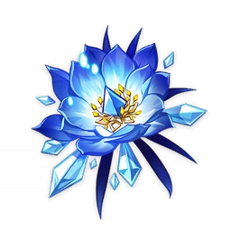

Select an Artifact Set
 Echoes of an Offering
Echoes of an Offering
 Vermillion Hereafter
Vermillion Hereafter
 Ocean-Hued Clam
Ocean-Hued Clam
 Husk of Opulent Dreams
Husk of Opulent Dreams
 Emblem of Severed Fate
Emblem of Severed Fate
 Shimenawa's Reminiscence
Shimenawa's Reminiscence
Blizzard Strayer
 Viridescent Venerer
Viridescent Venerer